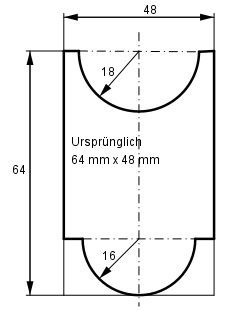

Aufgabe 224 Wie groß ist der Schnittverlust V?

V = Rechteck1 – (Rechteck2 – Halbkreis1) - - Halbkreis2 V = 48 mm * 64 mm – ((64 – 16) mm * 48 mm - 18² mm² * π 16² mm² * π - --------------) - --------------- = 2 2 V = 3 072 mm² - 1 795,3 mm² - 401,9 mm² = = 874,8 mm²